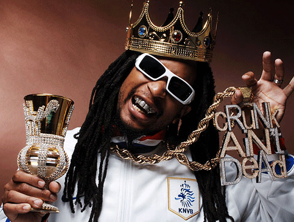

Biography of Lil Jon

Get Crunk!
Jonathan Smith (born January 17, 1971), better known by his stage name Lil Jon, is an American rapper, record producer, entrepreneur, and international DJ who was a member of the group Lil Jon and The East Side Boyz. Lil Jon formed the group in 1997, and the group released several albums between then and 2004. He then went solo and released a new album in 2010 called Crunk Rock. He was also featured on Celebrity Apprentice during its 11th and 13th seasons.
Jason Birchmeier of AllMusic has described Lil Jon's production as "bass-heavy" and his album Put Yo Hood Up as having "a long and varied list of guest rappers to accompany the beats". With the guest performers featured on that album much more than the East Side Boyz, Birchmeier remarked: "The end result is an album that resembles a street-level mixtape rather than a traditional artist-oriented album".[15] He was specifically influenced by 2 Live Crew, 8Ball and MJG, Three 6 Mafia, OutKast, Geto Boys, UGK, N.W.A, Dr. Dre, and Sir Mix-A-Lot. Alex Henderson, also of allmusic, contrasted Lil Jon's style of "rowdy, in-your-face, profanity-filled party music" with other Southern rappers', those who "have a gangsta/thug life agenda" and those who convey "serious sociopolitical messages".[16] Lil Jon has also found influence in rock music, having worked with Rick Rubin and Korn.[17] This influence embodies itself in his aggressive delivery and 'yelling' style of rap. He was seen on VH1's 100 Greatest Artists of All-Time program wearing a Bad Brains t-shirt and also used to listen to Lynyrd Skynyrd growing up in the South in the 1970s. For Trick Daddy's "Let's Go", Lil Jon sampled the bass line from Ozzy Osbourne's "Crazy Train".